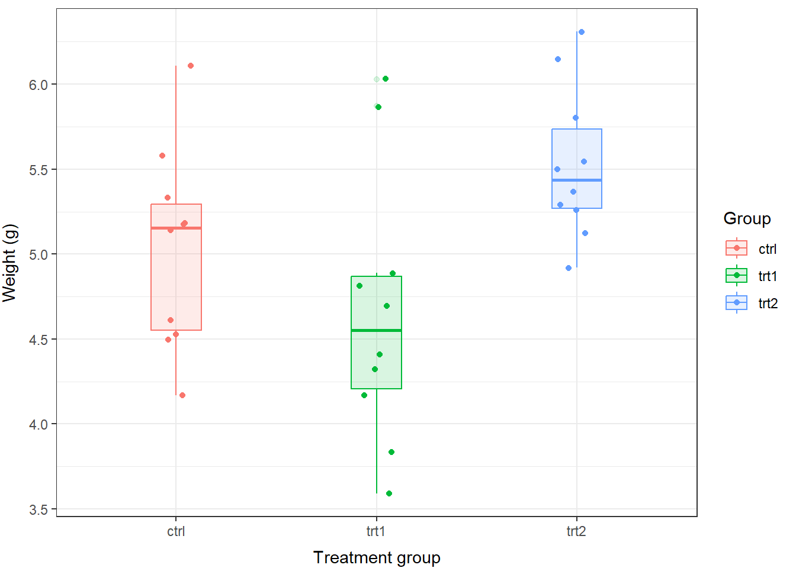
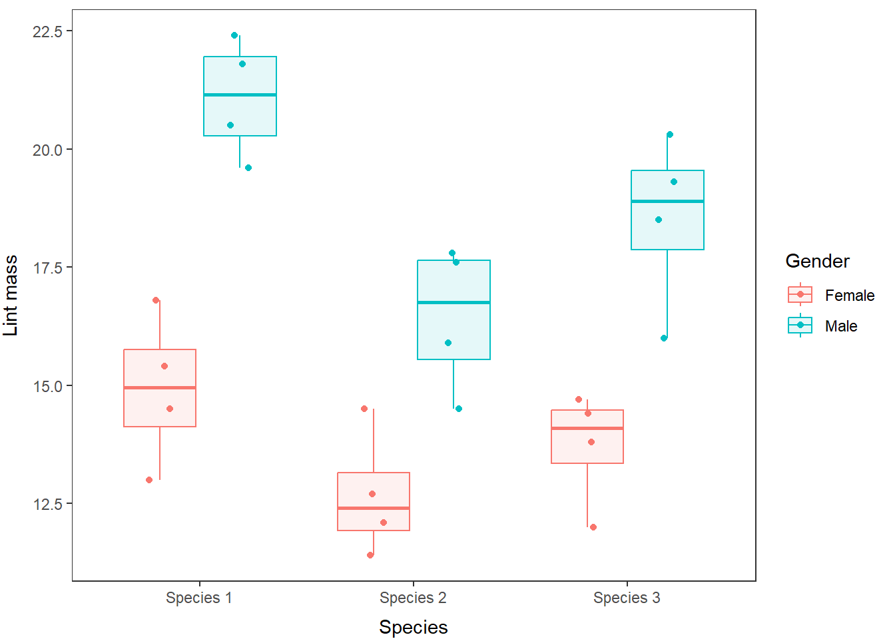

7.1 Analysis of variance (ANOVA)
We will use some of the built-in datasets in R this week to demonstrate our analyses and show how to communicate the methods and the results of our statistical inference.
Analysis of variance is typically used when we have a continuous dependent variable (y, response) and a categorical independent variable (x, explanatory) containing three or more groups. As with the t-test, we assume that the error (variance) within groups is normal (we’ll discuss in detail in Chapter 8). Most of the math behind ANOVA is basically the same as a t-test, but we add a couple steps for the third group, and now it essentially becomes the same thing as an F test (var.test() from Chapter 6[#Chapter6]) on three groups. In fact, the t-test, the F test, and one-way anova are all pretty much the same thing!
mind == blown
7.1.1 One-way analysis of variance
The number of grouping variables used in ANOVA confers different fancy naming conventions. The simplest of these contains a single grouping variable (e.g. treatment or year) and is referred to as one-way ANOVA. In theory, these models can be extended to include any number n of grouping variables (e.g. treatment and year) and are commonly referred to as n-way ANOVA.
Let’s start by loading the PlantGrowth dataset in R:
PlantGrowth is a dataframe with 30 observations of two variables. The first variable weight describes plant growth (in units of mass), and the second variable group contains control (ctrl) and two treatment groups (trt1 and trt2) for individual plants. Have a look, as always:
## 'data.frame': 30 obs. of 2 variables:
## $ weight: num 4.17 5.58 5.18 6.11 4.5 4.61 5.17 4.53 5.33 5.14 ...
## $ group : Factor w/ 3 levels "ctrl","trt1",..: 1 1 1 1 1 1 1 1 1 1 ...Let’s begin by using a one-way ANOVA to determine if the mass of plants differs between groups in PlantGrowth. In practice, this is very easy. First of all, though, we would report our methods something like this:
We used a one-way analysis of variance (ANOVA) to estimate the effects of treatment group on the mass (g) of plants assuming a Type-I error rate of \(\alpha\) = 0.05. Our null hypothesis was that all group means were equal (H0: \(\mu_{ctrl} = \mu_{trt1} = \mu_{trt2}\)).
Therefore, if any one of the means is not equal to the others, then we reject the null hypothesis.
You can fit an ANOVA using either the aov() function or the lm() function in base R. I prefer to use lm() for two reasons. First, there is output from lm() that I don’t get with aov(). Second, the lm() function is the one we’ll use for linear regression, multiple regression, and analysis of covariance. This reminds us that these models are all special cases of the glorious, over-arching group of general linear models Chapter 8 and will help us develop a standard workflow moving forward.
# Fit the model
model <- lm(weight~group, data=PlantGrowth)
# Print the model object to the console
model##
## Call:
## lm(formula = weight ~ group, data = PlantGrowth)
##
## Coefficients:
## (Intercept) grouptrt1 grouptrt2
## 5.032 -0.371 0.494Wow, that is dangerously easy to do. But, this output is not very useful for getting the information we need if you don’t already know what you are looking at. What we get here is essentially just one part of the information that we would like to (should) report.
We’ll proceed with a more standard ANOVA table for now using the anova() function:
# Save anova table to an object
plant_nova <- anova(model)
# Have a look at the goodness
print(plant_nova)## Analysis of Variance Table
##
## Response: weight
## Df Sum Sq Mean Sq F value Pr(>F)
## group 2 3.7663 1.8832 4.8461 0.01591 *
## Residuals 27 10.4921 0.3886
## ---
## Signif. codes: 0 '***' 0.001 '**' 0.01 '*' 0.05 '.' 0.1 ' ' 1Okay, this is really what we needed in order to evaluate our null hypothesis: an ANOVA table with a break down of the residuals, mean squared errors, and test statistic(s). We interpret the test statistic and the p-value the same way we did in Chapter 6 when we did t-tests and Wilcox tests. And, we can now say:
We found that the treatment had a significant effect on plant weight (ANOVA, F = 4.846, df1 = 2, df2 = 27, p = 0.0159).
We can also calculate the R2 value for the ANOVA, which is a statistic used to describe the amount of variation in the data explained by the model relative to the total variation in the data set. More correctly, we are actually comparing the sum of squared errors for the model we fit (SSB) to the total sum of squares (SST = SSB + SSE).
For what it’s worth, this is a super useful statistic for getting the big-picture perspective on whether your model is useful or crap. You calculate it pretty easily from the anova() output like as:
\[R^2 = \frac{SSB}{SST}\] …or…
Why wouldn’t you do this in R?
# Here is the sum of squares for the model
# Have to use back-ticks for spaces, sigh
ssb <- plant_nova$`Sum Sq`[1]
# And the sum of squares total is the sum
# of the column in this case
sst <- sum(plant_nova$`Sum Sq`)
# Some quick division, and we get...
R2 <- ssb/sstHave a look:
## [1] 0.2641483Now, we can say that our treatment effect explained about 26% of the variation in the data. The rest is a combination error and unexplained variation in the data that might require further investigation.
The only problem here is that this is an awful lot of work to get something that should be really easy to do in R. And, we still don’t know how weight varied between groups. We just know that at least one group is different from the other.
Thankfully, the default output of summary() for linear models fit with lm() does a lot of this for us.
##
## Call:
## lm(formula = weight ~ group, data = PlantGrowth)
##
## Residuals:
## Min 1Q Median 3Q Max
## -1.0710 -0.4180 -0.0060 0.2627 1.3690
##
## Coefficients:
## Estimate Std. Error t value Pr(>|t|)
## (Intercept) 5.0320 0.1971 25.527 <2e-16 ***
## grouptrt1 -0.3710 0.2788 -1.331 0.1944
## grouptrt2 0.4940 0.2788 1.772 0.0877 .
## ---
## Signif. codes: 0 '***' 0.001 '**' 0.01 '*' 0.05 '.' 0.1 ' ' 1
##
## Residual standard error: 0.6234 on 27 degrees of freedom
## Multiple R-squared: 0.2641, Adjusted R-squared: 0.2096
## F-statistic: 4.846 on 2 and 27 DF, p-value: 0.01591That’s better, we get some useful information here. First of all, we get the value of the test statistic, the df, and the p-value for the model. We also get the \(R^2\) for the model, 0.26, as part of the default output.
But, what if we want to know more about how treatment affected weight? Like, which groups are different? Can we use the p-values reported in the column Pr(>|t|) to infer group-wise differences? The quick answer is “sometimes”.
The Coefficients chunk of this output can help us with inference in simple situations, and it really is the key to making predictions from our models (see Chapter 10).
Remember, most model output in R is stored as lists, so we can extract the coefficients table like this if we look at `names( summary(model) ) to find what we want:
Okay, what is going on here? This looks nothing like the output we got from anova().
The coeffs object is a dataframe with columns for mean coefficient estimates, the standard error of those estimates, t-statistic, and p-value. We are actually not going to worry about the p-values here for a hot minute.
Let’s focus on the estimate column first. There are three values here. Each of these represents one of the factor levels in the group variable in PlantGrowth. They are assigned alpha-numerically, and the first (ctrl) is assigned as the (Intercept) or base level against which all others are compared. In this sense, the (Intercept) coefficient is an estimate of the mean value of weight for the group called ctrl.
Do a quick check:
# Calculate and print mean weight
# for the group ctrl in PlantGrowth
PlantGrowth %>%
filter(group == 'ctrl') %>%
summarize(avg = mean(weight))## avg
## 1 5.032As you can see, the prediction from the ANOVA is identical to the group mean estimated directly from the data.
The coefficients for grouptrt1 and grouptrt2 can be thought of adjustments to the (Intercept) coefficient, or the difference between the mean of ctrl and trt1 or trt2. If the Estimate for grouptrt1 or grouptrt2 is negative, then the mean for that group is less than ctrl and if it is positive, the mean for the group is greater than ctrl.
If we wanted to calculate the mean weight of the trt1 and trt2 groups, we would add them to the (Intercept) coefficient like this:
# Assign model coefficients to objects
ctrl <- coeffs$Estimate[1]
trt1 <- coeffs$Estimate[2]
trt2 <- coeffs$Estimate[3]
# Calculate group means for trt1 and trt2
# from the model
trt1_prediction <- ctrl + trt1
trt2_prediction <- ctrl + trt2
print(c(trt1_prediction, trt2_prediction))## [1] 4.661 5.526If you calculate the means for these groups directly from the data you’ll see that these values are identical to the mean weight of the trt1 and trt2 groups.
In Chapter 10 we will examine how to estimate confidence intervals around these estimates and make predictions from the model that include our uncertainty. But for that, we’ll need to talk about a little bit of math and we’re dealing with enough right now already!
Finally, the p-values associated with trt1 and trt2 indicates whether each group is significantly different from ctrl. In the case of the intercept, the p-value simply tells us whether the mean weight of ctrl is significantly different from zero. A fundamentally dull question - of course it is. This is the first time we really need to think about the differences between our statistical null hypotheses and our biological null hypotheses.
If we want to do further comparisons between groups (other than just comparing trt1 and trt2 to ctrl by themselves), then we need to add on a little “post-hoc” testing to find out which groups differ. We can use a ‘pair-wise’ comparison to test for differences between factor levels. Because this essentially means conducting a whole bunch of t-tests, we need a way to account for our repeated Type-I error rate, because at \(\alpha\) = 0.05 we stand a 1 in 20 chance of falsely rejecting the null even if it is true.
One tool that allows us to make multiple comparisons between groups while adjusting for elevated Type-I error is the Tukey HSD (honest significant difference) test. This test makes comparisons between each pairing of groups while controlling for Type-I error. Essentially, this makes it harder to detect differences between groups but when we do we are more sure that they are not spurious (“Honest significant difference”, say it with me).
Sound confusing? At least it’s easy to do in R.
We need to recast our model this as an aov object in R…this is essentially the same thing as the lm function, but in a different wrapper (literally) that allows us to access the info in a different way. It would be a fine default function for doing ANOVA if we weren’t interested in going any further with linear models.
TukeyHSD( # The function that does the Tukey test
aov( # A wrapper for lm objects
model # The model that we ran above
)
)## Tukey multiple comparisons of means
## 95% family-wise confidence level
##
## Fit: aov(formula = model)
##
## $group
## diff lwr upr p adj
## trt1-ctrl -0.371 -1.0622161 0.3202161 0.3908711
## trt2-ctrl 0.494 -0.1972161 1.1852161 0.1979960
## trt2-trt1 0.865 0.1737839 1.5562161 0.0120064This report shows us exactly how weight differs between each pair of treatment groups. Here, we see that the only significant difference (p adj < 0.05) occurs between trt2 and trt1.
For the readers, and for us, it may be easier to see this information displayed graphically:
# Make a boxplot of weight by group
# using the PlantGrowth data and
# base graphics
boxplot(
weight~group, # Relationship of interest as formula
data=PlantGrowth, # Name of the data set
col='gray', # Fill color for boxes
ylab='Mass (g)', # Y-axis label
xlab='Treatment group', # X-axis label
boxwex=.25
)
In addition to what we wrote before, we can now say something along the lines of:
“We found that the mass of plants in the trt2 group (5.5 \(\pm\) 0.4 g) was significantly greater than plants in the trt1 group (4.7 \(\pm\) 0.8 g; Tukey HSD, p = 0.012). However, we failed to detect differences in mass between plants in the control group (5.0 \(\pm\) 0.6 g) and trt1 (p = 0.39) or trt2 (p = 0.20).”
7.1.2 Two(n)-way ANOVA
Next, we’ll step up the complexity and talk about cases for which we have more than one grouping variable and some kind of numeric response. In these cases, we can use a two-way ANOVA (or ‘n-way’ depending on number of factors) to examine effects of more than one grouping variable on the response.
Here, we will use a data set describing differences in the mass of belly- button lint collected from males and females of three species of apes.
7.1.2.1 Main effects model
Now we can fit a model to the data. This will work the same way as for the one-way ANOVA above, but this time we will add more terms on the right hand side of the equation. We will start by looking at the main effects model for this data set.
What is a main-effects model? This model assumes that the response of interest, in this case the mass of belly button lint, lintmass, is affected by both species and gender, and that within species the effect of gender is the same. For example, the mass of belly button lint could be greater in one species compared to others, and if there is a difference between sexes we would expect that trend to be the same across species (e.g., boys always have more lint than girls - sorry guys, it’s probably true!).
# Fit the model and save it to an object
lint.model<- lm(lintmass~species + gender, data = lint)
# Look at the summary of the model fit
summary(lint.model)##
## Call:
## lm(formula = lintmass ~ species + gender, data = lint)
##
## Residuals:
## Min 1Q Median 3Q Max
## -2.5792 -0.9021 0.0875 0.8448 2.3917
##
## Coefficients:
## Estimate Std. Error t value Pr(>|t|)
## (Intercept) 15.5458 0.6133 25.346 < 2e-16 ***
## speciesSpecies 2 -3.4375 0.7512 -4.576 0.000183 ***
## speciesSpecies 3 -1.8750 0.7512 -2.496 0.021414 *
## genderMale 4.9083 0.6133 8.003 1.16e-07 ***
## ---
## Signif. codes: 0 '***' 0.001 '**' 0.01 '*' 0.05 '.' 0.1 ' ' 1
##
## Residual standard error: 1.502 on 20 degrees of freedom
## Multiple R-squared: 0.8096, Adjusted R-squared: 0.781
## F-statistic: 28.35 on 3 and 20 DF, p-value: 2.107e-07## Analysis of Variance Table
##
## Response: lintmass
## Df Sum Sq Mean Sq F value Pr(>F)
## species 2 47.396 23.698 10.499 0.0007633 ***
## gender 1 144.550 144.550 64.041 1.16e-07 ***
## Residuals 20 45.143 2.257
## ---
## Signif. codes: 0 '***' 0.001 '**' 0.01 '*' 0.05 '.' 0.1 ' ' 1As you can see, the output for the model is much the same as for the one-way ANOVA. The only real difference is that we have more than one grouping variable here. We conclude that there is a significant difference in lintmass between species (F = 10.50, df = 2, p < 0.05) and between genders (F = 64.01, df = 1, p < 0.05).
As before, we can make a quick boxplot and overlay our raw data to visualize these differences:
lint %>%
ggplot(aes(x = species, y = lintmass, fill=gender)) +
geom_boxplot() +
geom_point(position=position_jitterdodge(.1)) +
xlab('Species') +
ylab('Lint mass') +
labs(fill = "Gender") +
theme_bw() +
theme(axis.title.x = element_text(vjust=-1),
axis.title.y = element_text(vjust=3),
panel.grid = element_blank()
)
Hopefully after seeing these results you are now starting to realize how important a few well-placed figures and tables can be for clearly communicating the results of your research (even if it is about belly-button lint).
The math for making predictions becomes a little more complicated once we add a second grouping variable. Even the numbers of pair-wise comparisons can become overwhelming in a simple situation like this. Therefore, we’ll hold off on digging too much deeper into the math until next week.
7.1.2.2 Interaction terms
The n-way ANOVA is the first kind of model we have used in which it is possible to consider interactions between two or more factors. An interaction occurs when the effects of two or more factors are not additive. This means that the effect of gender might change for different species. For example, let us consider the following scenario in the lint data.
Perhaps we hypothesize that lint accumulation in the belly buttons of females differs in pattern from males due to social grooming patterns and sex-specific behavioral patterns favoring females in only certain species. As a result, we might expect that gender and species could have some kind of non-additive effect on lintmass in these apes such that there are significant, sex-specific differences only in some species. To test this, we would use the following:
# Fit a new model that includes an interaction, signified by '*'
lint.modeli <- lm(lintmass~species * gender, data=lint)
# Summarize the model
summary(lint.modeli)##
## Call:
## lm(formula = lintmass ~ species * gender, data = lint)
##
## Residuals:
## Min 1Q Median 3Q Max
## -2.525 -0.750 0.050 1.019 1.875
##
## Coefficients:
## Estimate Std. Error t value Pr(>|t|)
## (Intercept) 14.9250 0.7404 20.159 8.40e-14
## speciesSpecies 2 -2.2500 1.0471 -2.149 0.0455
## speciesSpecies 3 -1.2000 1.0471 -1.146 0.2668
## genderMale 6.1500 1.0471 5.874 1.46e-05
## speciesSpecies 2:genderMale -2.3750 1.4808 -1.604 0.1261
## speciesSpecies 3:genderMale -1.3500 1.4808 -0.912 0.3740
##
## (Intercept) ***
## speciesSpecies 2 *
## speciesSpecies 3
## genderMale ***
## speciesSpecies 2:genderMale
## speciesSpecies 3:genderMale
## ---
## Signif. codes: 0 '***' 0.001 '**' 0.01 '*' 0.05 '.' 0.1 ' ' 1
##
## Residual standard error: 1.481 on 18 degrees of freedom
## Multiple R-squared: 0.8335, Adjusted R-squared: 0.7873
## F-statistic: 18.03 on 5 and 18 DF, p-value: 1.898e-06## Analysis of Variance Table
##
## Response: lintmass
## Df Sum Sq Mean Sq F value Pr(>F)
## species 2 47.396 23.698 10.8079 0.0008253 ***
## gender 1 144.550 144.550 65.9253 1.983e-07 ***
## species:gender 2 5.676 2.838 1.2943 0.2984104
## Residuals 18 39.468 2.193
## ---
## Signif. codes: 0 '***' 0.001 '**' 0.01 '*' 0.05 '.' 0.1 ' ' 1Alas, in the case of the lint model, this interaction is not significant, so we lack the evidence we would need to say that lint accumulation changes differently between genders within species.